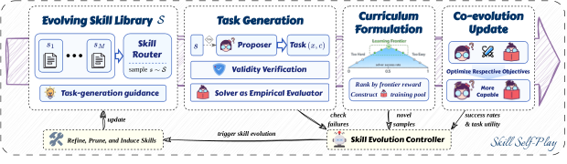
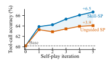

Proposer
根据采样到的技能生成有挑战、可执行、可验证的新任务。
原论文：Skill Self-Play: Pushing the Frontier of LLM Capability with Co-Evolving Skills问题、机制、实验、消融与适用边界的完整解读
Skill 是开放任务多样性与可靠验证之间的中间层：每个 Skill 约束一个可执行、可核验场景，动态路由又保持任务空间开放；Proposer、Solver、Skill Controller 因而能在同一 RL 回路中协同进化。
论文首版日期：2026-07-24 · 来源：arXiv:2607.22529
先理解旧范式为什么会在真实长程任务中失效，再看作者的解法是否击中了主要瓶颈。
开放式自生成任务与可靠验证长期存在张力：题目越开放，越难自动判断答案；验证越严格，任务又越容易被限制在少数环境。Skill-SP 的核心选择是把 Skill 作为中介，一个 Skill 定义可执行边界和验证方式，多个 Skill 的动态路由则保持课程多样性。
因此 Skill 在这里并非“给 Agent 看的攻略”，而是课程生成、任务验证和能力路由的共同索引。Proposer、Solver、Controller 三者的奖励相互依赖，训练对象是整套能力生态。
下面将问题拆成可观测的失效信号。阅读时要区分表面症状与真正的归因线索：只有当这些断点能在轨迹或日志中被定位，后续改进才有明确对象。
同一个任务可以用提示词、静态工作流或可演化系统解决。差异不在名称，而在反馈进入系统后究竟改变了什么。
下面先看系统部件，再看部件之间的信息流。两者缺一不可：组件列表告诉你“有什么”，闭环图告诉你“为什么能工作”。
下面的 6 个概念不是并列标签，而是论文用来划分系统职责的连续视角。阅读时可从“Proposer”开始，追踪信息经过中间组件后如何抵达“RL Loop”；重点不是记住名称，而是确认每一步消费什么证据、改变什么状态，并向下一步交付什么。
根据采样到的技能生成有挑战、可执行、可验证的新任务。
探索候选解，通过工具或推理完成任务并接受验证反馈。
路由当前技能，汇总执行反馈，更新和扩展技能库。
任务分布、求解策略与技能表示相互改变，形成持续课程。
以技能绑定场景提供更可靠的结果判定，抑制开放生成噪声。
把三个角色放入连续强化学习回路，而非离线生成一次数据。
技能库为出题器提供场景约束；候选任务经过有效性验证和前沿奖励筛选，再同时驱动求解器与技能控制器更新。
阅读要点：关键不是简单地让模型自己出题，而是用 Skill 把开放探索压缩成可执行、可验证的局部任务，并让失败与成功都能回写到下一轮课程。
把方法落到一次真实运行：每一步消费什么信息、产生什么中间状态，以及这些状态如何影响下一步。
模块说明回答“系统里有什么”，运行轨迹进一步回答“这些模块在什么时候被调用”。下面从“采样 Skill”走到“更新课程”，可以看到状态如何在一次任务中被收集、加工和重新写回；这也是判断方法是否形成可执行闭环的直接方式。
Controller 根据覆盖、难度和近期反馈选择一个技能域。
Proposer 在该技能约束下提出可执行且略高于 Solver 当前能力的任务。
Solver 调用工具或推理，环境给出比语言自评更可靠的结果。
成功与失败同时更新 Solver、Proposer 以及 Skill 库的路由和内容。
先抓住最能支撑论文主张的三块证据，再回到完整表格核对设置、结果与解释，避免只看一个最高分。
下面三块证据不是彼此孤立的结论，而是依次回答评测对象是什么、性能变化发生在哪里，以及结果能被解释到什么范围。先用概览建立证据地图，再回到后续表格核对数据集、基线、预算与指标方向，可以避免只凭最高分判断方法有效。
覆盖环境交互和纯推理两类能力
摘要未给统一单一数值
相对固定环境池更不易饱和
| 设置 / 维度 | 结果 | 如何解读 |
|---|---|---|
| 评测域 | 工具使用与通用推理 benchmark | 覆盖环境交互和纯推理两类能力 |
| 总体结果 | 持续抬升强 backbone 上限，并使初始错配模型出现明显反转 | 摘要未给统一单一数值 |
| 开放性 | 动态技能路由维持任务多样性 | 相对固定环境池更不易饱和 |
Skill Self-Play 把开放任务生成与技能库路由结合起来，实验覆盖工具调用和 ZebraLogic 约束推理。对已经具备较强基础能力的 Qwen、Granite 等模型，工具调用平均提升约 2.8–6.5 个绝对点；对初始模式错配的 Ministral-3-8B，提升达到 42.9 点，而无引导自博弈几乎无法启动。
大幅反转来自“能否生成有效训练任务”，而不只是训练步数。弱模型在无引导条件下生成的任务经常不可验证或模式错误，导致数据循环没有可学习信号；技能库把历史证据绑定到下一步动作规则，并用路由器把任务推向当前能力边界。
逻辑推理实验同样显示跨域收益，部分网格规模提升可达 12 个点以上，但在 Large 与 X-Large 难度上仍受到基础能力阈值限制。这说明自博弈不是无条件放大器：模型至少要能生成结构合法、可验证的题目，闭环才有机会积累。
消融进一步区分了四种机制。移除技能编排的 Naive Self-Play 总体下降 2.6 点；Uniform Routing 和 Frozen Skills 分别落后完整系统约 1.9 与 2.3 点；只使用技能驱动任务又会在 API-Bank 上过度专化。有效方案依赖动态路由和开放探索的混合。
因此，评估这类工作不能只看最终准确率，还应报告有效任务比例、技能覆盖、训练数据去重和不同难度上的学习曲线。否则增益可能只是更多合成数据，而不是任务分布真正随模型能力共同演化。
| 基准 | Task Form | Main Capability | Reported Metrics |
|---|---|---|---|
| API-Bank ( Li et al., 2023 ) | Dialogue-conditioned next tool call | Tool selection, argument grounding, schema adherence | Level 1–3 accuracy and average |
| BFCL ( Patil et al., 2025 ) | Function-calling prompts across programming and live-tool categories | Cross-benchmark tool-call generalization | Category accuracy and BFCL average |
| ZebraLogic ( Lin et al., 2025 ) | Zebra-style grid puzzles with deterministic constraints | Constraint tracking, uniqueness reasoning, complete solution synthesis | Grid-level and cell-level accuracy |
数据来源：原论文公开表格。保留方法名、指标、单位与方向。详细表注与实验条件见原论文对应表格。
| Pipeline component | Runtime share |
|---|---|
| Proposer policy optimization | 24.3\% |
| Solver-curriculum construction | 57.0\% |
| Skill-stream generation and verification | 20.0\% |
| Exploration-stream generation and verification | 37.0\% |
| Solver policy optimization | 10.2\% |
| Skill-library evolution | 6.5\% |
| Skill induction | 1.3\% |
| Skill refinement | 5.2\% |
| Held-out benchmark evaluation | 1.9\% |
| Other orchestration | 0.1\% |
数据来源：原论文公开表格。保留方法名、指标、单位与方向。详细表注与实验条件见原论文对应表格。

Skill Self-Play 把开放任务生成与技能库路由结合起来，实验覆盖工具调用和 ZebraLogic 约束推理。对已经具备较强基础能力的 Qwen、Granite 等模型，工具调用平均提升约 2.8–6.5 个绝对点；对初始模式错配的 Ministral-3-8B，提升达到 42.9 点，而无引导自博弈几乎无法启动。
图中坐标、图例、误差范围与数值均保留论文原始口径。

大幅反转来自“能否生成有效训练任务”，而不只是训练步数。弱模型在无引导条件下生成的任务经常不可验证或模式错误，导致数据循环没有可学习信号；技能库把历史证据绑定到下一步动作规则，并用路由器把任务推向当前能力边界。
图中坐标、图例、误差范围与数值均保留论文原始口径。
数值以论文摘要/正文公开口径为准；“论文报告”表示尚未经过独立复现。不同论文的模型、预算、环境和评价协议不同，不应把表中数值直接跨论文排位。
这里把“论文贡献”和“证据边界与局限”放在同一行讨论，是为了避免把局部有效直接写成普遍规律。前者回答论文真正增加了什么，后者限定结论能够迁移到哪些模型、任务和预算；只有同时阅读，才能形成完整判断。
这三点适合在读原文、看附录或准备复现时逐项核对，也是区分机制收益与工程堆料的最快路径。
这组阅读线索把本节结论转成三个可核对的问题：核心判断在什么条件下成立，哪些变量可能混入收益，以及复现时仍缺少什么证据。它们不是额外结论，而是帮助读者在原文、附录和实验记录中快速定位证据缺口。
真正的新意是 Skill 同时控制“练什么”和“如何验证”。
联合训练带来的非平稳性是最大风险，必须看角色级消融。
若 Skill 的 verifier 有漏洞，课程会系统性教会 Solver 奖励投机。
复现实验最容易把模型能力、推理预算与系统设计混在一起。下面列出的变量应在比较前锁定并完整记录，否则性能差异很难归因于论文提出的机制。
迁移不是照搬原系统，而是先判断自己的任务是否具备相同的反馈、状态和成本条件。下面的检查项把论文结论改写为工程决策，帮助确定哪些设计可直接复用、哪些仍需重新验证。
核心洞察很强：Skill 不是记忆容器，而是可验证课程的结构单元。若迁移到经营，关键不在多 Agent，而在把技能绑定到明确状态、动作和可审计收益。